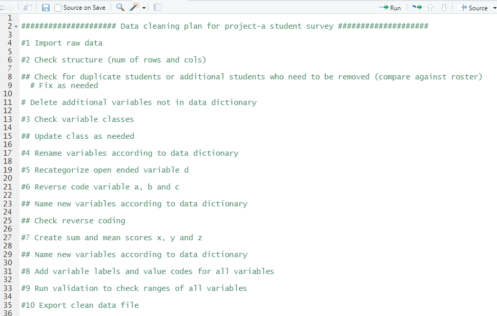

You can view slides from this talk TBD
This module is a work in progress.
Data cleaning or data wrangling is the process of organizing and transforming raw data into a dataset that can be easily accessed and analyzed. A data cleaning plan is a written proposal, usually created by a data manager, for how you plan to transform your raw data into the clean, usable data. Think of this as a roadmap. This is different than a code file or even a pseudocode file in that there is no code or syntax in a data cleaning plan. It is just a plain text explanation for the transformations and checks you intend to do with a raw data file. It can be saved in any format that works for you, .txt, .docx, .rmd, etc. You can even write it in a code file (ex: .R) through comments if you wish, and I often do, as long as it is not code or technical skills dependent. Anyone from a project coordinator to a programmer should be able to read and understand this file and provide feedback if needed. A data cleaning plan is started prior to data collection, however, similar to every other piece of documentation, this is also a living document that will be updated as you obtain more knowledge.
An example of a very simplified cleaning plan:

In order to start a data cleaning plan, you need to have the following:
Data cleaning requires a solid foundation around data literacy, the ability to create, interpret, and communicate data as information. Without data literacy it is difficult to visualize how to transform the raw data you have into the format that you need to answer your questions.
While we hope data literacy and good data management permeates every step of the data lifecycle, including data collection, neat data is rarely handed to you, and oftentimes you are taking a file that is mostly unusable and converting it to something useful.
Here are ways to build data literacy, adapted from Venngage:
📑 Additional resource on boosting data literacy
A lot of data literacy also relies on domain knowledge or ghost knowledge(https://counting.substack.com/p/whys-it-hard-to-teach-data-cleaning), information you only learn from being immersed in a field. Examples of domain knowledge I have acquired from being in the field of education research include:
If researchers tell me they are analyzing longitudinal data, I know I need to account for time in the data in some way (ex: add a time variable). If researchers are clustering data, I know I need to account for that cluster in the data in some way (ex: add a cohort variable). I know if we have multiple forms or forms across time, we have to link our data and I need to add a unique study id to link data.
There are school districts we work with that send us student level discipline data (ex: number of OSS or ISS referrals). They do not have codebooks or data dictionaries for these data. However, I know from working with these districts and having conversations with them, that if there are no referrals for a student, they leave a cell blank (rather than enter a zero). If I did not have this domain knowledge, I would assume the information is simply missing.
Similarly, I know from working with certain districts as well as state education agencies and having conversations with them, that how state test scores are collected or scored have changed across years (state and district). Again, most of these agencies don’t usually have codebooks or data dictionaries but I have learned this through conversations and by noticing differences in score ranges over time.
Again, from working with districts and states, I know to prepare for inconsistencies in data. I’ve seen variable names change over time. I’ve also seen the variables collected change over time. And sometimes, across time, variables with the exact same name are no longer measuring the same thing (another reason why documentation is so important).
I know what you may be thinking here. Earlier I said that the interpretation of a data cleaning plan should not require any technical knowledge. This is still true. However, the person who writes the data cleaning plan still needs to have a basic understanding of how the software that is used to collect the data and any software that will be used to clean or analyze the data. This knowledge will inform the steps you add to a data cleaning plan.
Become familiar with the following: 1. The tools used to collect data
| Q1_1 | Q1_2 | Q1_3 | Q1_4 |
|---|---|---|---|
| NA | 1 | NA | NA |
| NA | 1 | 1 | 1 |
| NA | NA | NA | NA |
| 1 | 1 | 1 | NA |
Mplus examples: https://tutorials.methodsconsultants.com/posts/preparing-data-for-mplus/ https://stats.idre.ucla.edu/mplus/faq/how-can-i-move-my-data-from-spss-to-mplus/
Resources around data formats: https://dmptool.org/general_guidance#file-formats https://www.lib.ncsu.edu/do/data-management/formats-and-organization
While everything above is absolutely imperative to the data cleaning process, this may actual be the most important step in developing a data cleaning plan. If you don’t know a) how your data is collected, and b) how researchers plan to analyze the data, you have no roadmap for data cleaning. This is where you learn things such as:
This initial meeting with stakeholders, prior to data collection or even prior to building data collection tools, is a great time to start your documentation. This should not just be one initial meeting though. While the PIs may only need to be brought in at the beginning, a data manager should meet with the coordinators more frequently to monitor changes to the data collection instruments, any new measures added, changes in data collection protocol, any anticipated hiccups. After data is cleaned, data teams should consider having data reviews with project coordinators to cover what data issues were encountered and what could we have done better.
Before we can start writing our data cleaning plan, we need to understand what structure we need our data to be in for analysis.
In the world of quantitative education research, we are most likely trying to create rectangular datasets (rows and columns), rather than having data in text files, video recordings, xml, etc. Even in qualitative research, we are often wrangling data to be in a format that is analyzable and allows categorization.
Our role as data managers is not to think of every possible iteration of how an analyst/researcher may want their data or every variable they may need. However, it is our role to reduce the amount of work required to get that data into an analyzable format. Below I lay out some of the go-to steps I like to add to a data cleaning plan and the reasoning behind why I think they are important.
Over the years I have seen researchers manually clean code….